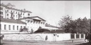

{kind=link}
{kind=link}
{kind=link}
{kind=link}
{kind=link}
{kind=link}
{kind=link}

Сидят Петр Николаевич с женой и детьми,
справа от него - сестра Александры Владимировны Трубецкой Прасковья Владимировна с сыном В.В. Давыдова Александром.
Узкое.
Фотография 1890 года
Страницы авторов "Тёмного леса"
Литературный Кисловодск и окрестности
Пишите нам! temnyjles@narod.ru
| Петр Николаевич Трубецкой. Фотография 1890-х годов |
Признанным лидером московского дворянства на рубеже XIX-XX веков являлся князь П.Н. Трубецкой{1}, четырнадцать лет занимавший должность губернского предводителя. Несмотря на это, его можно назвать "неизвестным Трубецким". Став после 1917 года "фигурой умолчания", Трубецкой ныне воспринимается некой бледной тенью прошлого, его биография практически не привлекает внимания историков. Однако жизнь и деятельность Петра Николаевича чрезвычайно интересны в плане изучения как Москвы и Подмосковья, так и истории знаменитого княжеского рода Трубецких.
Петр Николаевич Трубецкой был старшим сыном директора Московского отделения императорского Русского музыкального общества (РМО) князя Николая Петровича Трубецкого (1828-1900). Он и его сестры Софья (1853-1936){2} и Мария (1860-1926){3} рано остались без матери, княгини Любови Васильевны Трубецкой (1828-1860), урожденной графини Орловой-Денисовой, которая умирая "просила свою сестру графиню Толстую взять ее детей на воспитание и мужа уговаривала вторично жениться, видя, как ему необходима семейная обстановка"{4}, - вспоминал родственник Трубецких М.М. Осоргин.
| Евгений Николаевич Трубецкой со своей матерью Софьей Алексеевной. Фотография 1891-1893 годов |
В 1861 году Н.П. Трубецкой женился на Софье Алексеевне Лопухиной (1841-1901): "Он познакомился с семьей Лопухиных, безумно влюбился в старшую дочь Софью Алексеевну, неотступно стал за ней ухаживать и добился ее согласия"{5}. У них родилось десять детей. Наиболее выдающимися стали знаменитые университетские профессора и философы Сергей (1862-1905) и Евгений (1863-1920) Николаевичи Трубецкие. Историк Н.С. Арсеньев писал об этой семье как о "носительнице преданий моральных, культурных и религиозных, живой носительнице той духовной традиции, жизненной и творческой, которая жила и развивалась во многих старых русских культурных семьях и вдохновила много самого ценного из созданий русской духовной культуры"{6}. Н.П. Трубецкой принимал участие в жизни своих детей и от первого брака и всегда вызывался Толстыми, когда требовались "принципиальные решения их судьбы"{7}.
Детство Петра Трубецкого и его сестер прошло в Москве и большом подмосковном имении Толстых Узком (ныне в черте Москвы, Профсоюзная улица, 123 А). Со временем (в 1883 году) оно перешло от С.В. Толстой к П.Н.Трубецкому. Официально Узкое значилось проданным, хотя это была лишь формальность, что подтверждает сумма, указанная в купчей крепости: большое имение общей площадью 214 десятин с господским домом и хозяйственными постройками оценено там всего в 3500 рублей{8}. Для сравнения: находившееся севернее Узкого имение Черемушки-Знаменское площадью 114 десятин в 1880 году приобрел у генерал-адъютанта князя В.А. Меншикова купец В.И. Якунчиков за 60000 рублей{9}.
| Господский дом усадьбы Узкое. Вверху западный фасад, внизу восточный фасад. Фотографии 1890 года | |
Кроме Узкого, П.Н. Трубецкому принадлежали обширные поместья на юге страны: Казацкое (Херсонская губерния) и Долматово (Таврическая губерния). Также он владел имением Сочи (Ардуч), находившимся в Черноморской губернии, и казачьим паем в Пятиизбянской станице 2-го Донского округа (благодаря родству с Орловыми-Денисовыми эта ветвь Трубецких состояла в казачестве). Поэтому в 1883 году дворянское собрание Войска Донского избрало его почетным попечителем Нижнечирской мужской прогимназии){10}.
Окончив юридический факультет Московского университета, П.Н. Трубецкой начал службу по ведомству Министерства внутренних дел. В 1883 году он впервые "исполнял должность" московского уездного предводителя дворянства, заменив графа А.В. Бобринского{11}, а в следующем году заменял уже не уездного, а губернского предводителя. Впоследствии оба эти поста он занимал путем выборов. Московским губернским предводителем дворянства Петр Николаевич, как уже сказано, был очень долго (1892-1906). Параллельно он получал придворные и гражданские звания, пройдя путь от камер-юнкера до егермейстера и став в 1896 году действительным статским советником.
Судя по воспоминаниям, в личной жизни П.Н. Трубецкой отличался гостеприимством и радушием. С.П. Раевский со слов своей матери Ольги Ивановны, урожденной Унковской, писал:
"Все родственники и знакомые обожали Петра Николаевича. Слывя добродушным <...> хозяином, он любил одаривать комплиментами молодых красивых девушек. Одно время он высказывал восхищение моей матерью, когда она была еще не замужем. <.> Однажды она со своей сестрой была приглашена на бал к Трубецким, и княгиня Александра Владимировна - жена Петра Николаевича, встретив их, обратилась к моей матери с такими словами: "Это в вас влюблен мой муж?" Мама смутилась и ответила: "Я не знаю". Сам хозяин вошел в это время и, обращаясь к жене, весело произнес: "В нее, в нее, неужели ты не поймешь?"
Все эти любезности пожилого князя воспринимались его женой и всеми близкими как шутка и никогда не могли служить причиной к обвинению Петра Николаевича в легкомыслии и волокитстве"{12}.
Помолвка П.Н. Трубецкого и Александры Владимировны Оболенской (1861-1939) состоялась летом 1884 года в подмосковной усадьбе Мещерское (Подольский уезд){13}. Обвенчались они 1 октября и после свадьбы уехали в путешествие по Европе. Брак оказался удачным: у П.Н. и А.В.Трубецких было два сына - Владимир (1885-1954){14} и Николай (1890-1961), родившийся в Узком{15}, а также четыре дочери - Софья (1887-1971), в замужестве графиня Ламсдорф-Галаган{16}, Любовь (1888-1980), в замужестве княгиня Оболенская{17}, Елизавета (1892-1892){18}, и Александра (1894-1953), по первому мужу Тимашева, по второму Бушек{19}.
| Петр Николаевич Трубецкой с женой Александрой Владимировной в Узком. Фотография 1890 года |
Пожалуй наиболее развернутую характеристику П.Н. Трубецкого оставил уже цитировавшийся выше М.М. Осоргин: "Сын Петр из всех детей первого брака моего тестя был ближе всех к родным братьям и сестрам моей жены, а с моей женой одно время был особенно близок; он часто навещал их в Калуге, пришел <...> в нужную минуту на помощь{20}, а когда они бывали в Москве, всячески старался их веселить; несомненно, что воспитание, полученное им у своей тетушки графини Толстой, настолько разнилось с семейным строем, введенным моей belle-mere (фр.: теща. - М.К.), что Петя во многом отличался от других братьев моей жены и некоторыми своими свойствами коробил их, но природная доброта и талантливость натуры его отца и в нем сказалась, причем талантливость в нем выразилась в каком-то особенном его умении объединить и ютить людей, совершенно различных по взглядам и убеждениям. У него в доме и в его присутствии все смягчалось и обсуждение всякого жгучего вопроса лишено было страстности; эта особенность сказалась, когда он был московским губернским предводителем дворянства; положил он в то время начало объединению всего дворянства в России, организовав вначале частные, а потом и официальные съезды всех губернских предводителей; когда же он был избран в Государственный Совет, он продолжал свою деятельность и там в том же роде, и в его доме было много сглажено трений и принято общих решений членами Государственного Совета, причем сам далеко не обладая государственным умом, он редко способствовал тому или иному решению вопроса, а лишь смягчал столкновения, мирил слишком ярых противников и всегда старался подыскать ту равнодействующую, которая могла бы удовлетворить всех. Недаром его в шутку, на ушко, прозывали губернский предводитель дворянства Государственного Совета{21}. Умер он в расцвете сил при самых драматических обстоятельствах. <...> Женат он был на княжне Александре Владимировне Оболенской, одной из детских подруг моей жены. <.> Она, хотя страдавшая заиканием, умела быть верной помощницей мужа в его общественной деятельности, всегда любезно и с большим достоинством принимая всех его сослуживцев и гостей; и она и он были очень богаты, что дало ей возможность поставить свой дом на широкую ногу, но с большим вкусом и благородством, ее светская жизнь не мешала ей заниматься воспитанием своих детей, на которых она положила много забот, глубоко продуманных, и для которых она до сих пор, несмотря на то, что почти все они замужем и женаты, непреложный авторитет"{22}.
Владея обширными поместьями, П.Н. Трубецкой проявил себя грамотным сельским хозяином и удачливым предпринимателем. Как крупный винодел он был одним из организаторов и председателем учрежденного в 1901 году комитета виноградарства и виноделия Императорского Московского общества сельского хозяйства{23}. Кроме того, Петр Николаевич возглавлял еще одну аналогичную структуру - комитет виноградарства Императорского общества сельского хозяйства Южной России. В Казацком, унаследованном им от матери, находились многочисленные виноградники, урожай с которых служил сырьем для великолепных вин, изготавливаемых по рецептам князя. Виноградники заложили в 1896 году, а уже через несколько лет вина из Казацкого и расположенного по соседству Долматова получили ряд отечественных и международных призов{24}. На первом всероссийском съезде виноградарей и виноделов в Москве работу П.Н. Трубецкого на этом поприще как "громадный успех" охарактеризовал выдающийся отечественный винодел князь Л.С. Голицын{25}, лично подобравший сорта винограда для Казацкого и Долматова{26}.
Виноградарство было не единственным занятием П.Н. Трубецкого. В том же Казацком существовало тонкорунное овцеводство - по свидетельству друга хозяина Н.А. Хомякова, одно из лучших в России{27}. Трубецкой стоял во главе Терского горнопромышленного общества и принимал участие в Челекено-Дагестанском нефтепромышленном обществе. Таким образом, можно охарактеризовать его как одного из наиболее крупных представителей деловой элиты России, происходивших из старой родовой аристократии.
Узкое "до революции <...> не было рентабельно, а являлось личной резиденцией владельца"{28}. При этом оно требовало постоянных расходов на свое содержание, став, по сути, большой семейной подмосковной дачей{29}. Хотя некоторые отрасли хозяйства в Узком приносили и прибыль - в частности, от продажи выращиваемого в оранжереях ежегодно выручалось до 1000 рублей{30}, тогда как в большинстве усадеб пореформенного периода оранжереи приносили лишь убытки.
Из имения П.Н. Трубецкого Сочи в Узкое привозились грунтовые розы для акклиматизации{31}. Здесь сформировалась целая "розовая" индустрия (для роз в Узком была устроена специальная оранжерея). Все крупные цветоводы Московской губернии покупали розы у П.Н. Трубецкого. Поэтому можно говорить об Узком как об усадьбе, где существовало коммерческое цветоводство, причем выдерживавшее достаточно жесткую конкуренцию.
Наверняка определенную прибыль приносила и пасека, появившаяся позднее.
Полевое хозяйство организовали в Узком на рубеже 1880-1890-х годов с целью получения соломы и сена{32}: "Инвентарь только еще начинает вводиться, хотя почему-то в имении была уже раньше жатвенная машина"{33}. Летом на сезонные работы нанимали крестьян{34}. "В имении, во всяком случае, видно влияние "порядка", но действующего откуда-то извне, мало связанного с управляющим, которого я видел, и "порядка", обращенного больше на внешнюю, видовую сторону"{35}, - заметил один из служащих статистического отделения губернской земской управы, осматривавший тогда Узкое.
| П.Н. Трубецкой с сыном Владимиром перед отъездом из Узкого в Москву. Фотография 1890 года |
Из большого конного завода в Казацком в Узкое доставляли диких лошадей для объездки{36}. Ими владелец любил сам управлять, катаясь в экипаже{37}.
Видимо, из-за отсутствия доходов П.Н. Трубецкой расстался с частью принадлежавших ему подмосковных территорий, продав 13 октября 1889 года за 5000 рублей 100 десятин земли при деревне Нижние Теплые Станы, расположенных особняком и в силу этого мало связанных с хозяйством в Узком. Их новым владельцем стал выпускник юридического факультета Московского университета князь Г.Е. Львов (1861-1925) - будущий глава первого состава Временного правительства{38}. Взамен А.В. Трубецкая впоследствии приобрела имение Большое Голубино, граничившее с Узким. Очевидно, были прикуплены и другие земли, так как к 1896-1897 годам площадь угодий в Узком составляла уже 402 десятины{39}. Частичному переустройству подвергся усадебный парк. Большой фруктовый сад в 1904 году сдавался внаем желающим собрать урожай{40}. По-видимому, это практиковалось каждый год. Содержание церковного причта в имении оценивалось как "весьма недостаточное"{41}.
П.Н. Трубецкой капитально реконструировал основные усадебные постройки, сделав их максимально удобными для своей большой семьи, жившей в усадьбе летом вместе с состоявшими при детях учителями и гувернантками. Кроме того, в летние месяцы в Узкое съезжались многочисленные друзья и родственники владельца: Трубецкие, Глебовы, Кристи, Давыдовы, Толстые и прочие - как правило, тоже с детьми. Занятия в Узком шли по расписанию: дети штудировали все предметы по программе гимназии, обучались французскому и немецкому языкам, игре на фортепиано.
П.Н. и А.В. Трубецкие способствовали также просвещению детей местных крестьян. Князь состоял попечителем начальных земских училищ, которые находились в ближайших селах - Конькове-Сергиевском и Тропареве{42}. В Узком восстановили начальное земское училище, основанное еще в 1874 году. Оно располагалось в доме, принадлежавшем уездному земству. На средства П.Н. Трубецкого к дому сделали пристройку. Жена князя была утверждена попечительницей училища{43}. 8 мая 1899 года заведение посетил с инспекцией писатель М.К. Иогель{44}. В своем отчете он, в частности, отметил, что это училище - лучшее среди тринадцати, виденных им, но, к сожалению, местный священник С.А. Беляев, преподававший Закон Божий, недобросовестно отнесся к своим обязанностям, в результате "сведения, полученные учениками, отличаются безсвязностью и отрывочностью"{45}. А.В. Трубецкая создала при училище подобие пансиона, в котором большинство детей ночевали и питались в специально приспособленном помещении{46}. Однако со временем училище в Узком было закрыто{47}.
| Сын П.Н. и А.В. Трубецких Владимир играет в крокет с гувернанткой. Фотография 1890 года | |
| Дети П.Н. и А.В. Трубецких с гувернанткой. Фотография 1890 года |
С 1904 года Трубецкие стали организовывать для своих подросших отпрысков танцклассы в доме Бутурлиных на Знаменке, где они жили (ныне Знаменка, 12/2){48}. Приглашались сверстники из семей, связанных с Трубецкими родственными или дружескими отношениями: Бобринских, Бутурлиных, Глебовых, Граббе, Львовых, Родионовых, Самариных, Сиверс и других{49}. В 1906 году Трубецкие, имевшие уже дочерей-невест, переехали в Петербург, поскольку "женихов в Москве было мало - здесь можно было выйти за какого-нибудь родственника или друга детства (что иногда и делалось), но блестящие партии встречались только в Петербурге"{50}. Переезд был связан и с избранием П.Н. Трубецкого в Государственный совет{51}.
|  | Дом Бутурлиных на Знаменке. Фотография 1913-1914 годов |
Обширная хроника событий, происходивших в Узком при Трубецких, лишь частично восстанавливается по письмам и воспоминаниям. Обитатели Узкого отдыхали, развлекались, устраивали праздники по различным поводам, навещали родственников в отдаленных усадьбах. В конце лета - начале осени - время выделки молодого вина - они обычно отправлялись в Казацкое. Осенью в Узком устраивались охоты на зайцев, зимой сюда выезжали на пикники.
4 ноября 1883 года в усадьбе торжественно отпраздновали двадцатипятилетие П.Н. Трубецкого. Среди многочисленных друзей, знакомых и родственников юбиляра были вторая жена его отца С.А. Трубецкая с одной из дочерей - Варварой (1870-1933){52} и младшим сыном Григорием (1873-1929){53}. "Всякое отступление от обычного темпа жизни вырастало в большое событие и навсегда врезывалось в память, - вспоминал Г.Н. Трубецкой. - Таким событием была поездка в Москву (из Калуги, где они тогда жили. - М.К.) летом 1882 года{54}. Мама взяла с собой Варю и меня, чтобы посоветоваться с докторами, - у нее были какие-то гланды, у меня болели глаза. Мы были очень рады нашим болезням. Бедная Линочка{55} была здорова и ее оставили. Это было первое передвижение наше по железной дороге после приезда в Калугу, которого я не помню. Все для нас было ново и интересно. <...> Потом нас повезли в Узкое - имение графини Толстой, перешедшее моему брату Петру. В этот год праздновали день его рождения - ему минуло 25 лет. Было много народу. В числе гостей был Тертий Иванович Филиппов с женой и сыном, когда-то бывший у Толстых домашним учителем, а потом дослужившийся до Государственного Контролера{56}. Его сын был на 2 года меня старше и сильнее, и пользовался этим, чтобы куражиться. Я его возненавидел и помню, как мне трудно было оберегать мое достоинство от его задираний. Варя мне всячески помогала и разделяла мои чувства"{57}.
14 июня 1884 года в Узком крестили племянницу владельца - дочь С.Н. и В.П. Глебовых Софью (1884-1943), впоследствии графиню Олсуфьеву{58}. Ее восприемниками были сестра матери Мария Николаевна Кристи и генерал-майор свиты (впоследствии генерал-лейтенант) граф Николай Федорович Орлов-Денисов (1839-1897), участник Русско-турецкой войны 1877-1878 годов.
По свидетельству М.М. Осоргина, владельца усадьбы Сергиевское (Калужский уезд Калужской губернии){59}, летом 1886 года он посетил Узкое вместе со своей будущей женой - сводной сестрой П.Н. Трубецкого княжной Елизаветой Николаевной Трубецкой (1865-1935). "До отъезда из Москвы мы ездили в Узкое к ее старшему брату Петру и туда же приехали нас повидать сестры его жены княжны Оболенские"{60}. У А.В. Трубецкой было три сестры: Софья (1858-?), Прасковья (1860-1914), впоследствии вышедшая замуж за философа С.Н. Трубецкого (одного из наиболее значимых деятелей русской культуры, посещавших Узкое), и Елизавета (1866-1939), позднее действительный член Московского благотворительного общества и попечительница 2-го пятиклассного училища{61}.
| М.М. Осоргин в Сергиевском среди земских начальников и волостных старшин |
М.М. Осоргин{62} вспоминает, что летом 1889 года он и семья Н.П. Трубецкого гостили сначала в подмосковной усадьбе Меньшово (Подольский уезд), а затем в Узком. "Со всей семьей Трубецких поехали мы к Пете Трубецкому в Узкое и уже оттуда я поторопился домой, соскучившись по Лизе (жене. - М.К.)"{63}.
Судя по альбому фотографий из частного собрания семьи родственников Трубецких Давыдовых, летом 1890 года в Узкое приезжал двоюродный брат владельца, бывший член Московской судебной палаты Василий Васильевич Давыдов (1845- 1896){64} вместе со своим четвертым сыном Александром (1879-1964){65}. В.В. Давыдовым и сделано большинство фотографий в этом альбоме, которые являются уникальными источниками по истории и архитектуре Узкого{66}.
Летом 1895 года Трубецкие вместе с учителем Г.Н. Сперанским, впоследствии известным детским врачом, посетили подмосковную усадьбу Н.П. Трубецкого Золотилово (Дмитровский уезд){67}. Тогда в Узком жил Сергей Николаевич Трубецкой (это первый документально зафиксированный его приезд в усадьбу) с женой Прасковьей Владимировной, урожденной княжной Оболенской (1860-1914), дочерью Марией (1888-1935) и сыновьями - Николаем (1890-1938){68} и Владимиром (1891-1937){69}.
| Николай Петрович Трубецкой с внуком Николаем. Фотография 1891 года | |
| Сыновья С.Н. Трубецкого - Владимир и Николай. Фотография 1900 года |
Обоих сыновей С.Н. Трубецкого увековечил их двоюродный дядя, выдающийся скульптор Паоло (Павел Петрович) Трубецкой (1866-1938), который также приезжал в Узкое летом 1895 года{70}. Возможно, именно здесь у мастера возникла идея его известного произведения "Дети Трубецкие", запечатлевшего Николая и Владимира, сидящих на небольшой парковой скамейке. Гипсовые и бронзовые отливки этого шедевра ныне хранятся в ведущих отечественных и зарубежных музеях, в том числе в Государственной Третьяковской галерее. Одна из них какое-то время находилась в Узком (ныне в Государственном Русском музее).
В 1900-м году в Узком фактически на руках у С.Н. Трубецкого скончался выдающийся русский мыслитель Владимир Сергеевич Соловьев. Во время его болезни на Трубецких обрушилась и семейная трагедия. 19 июля в подмосковной усадьбе их родственников Лопухиных Меньшово (Подольский уезд) скончался от разрыва сердца князь Николай Петрович Трубецкой. Для участия в похоронах, состоявшихся 22 июля в Донском монастыре, в Москву вернулись П.Н. и А.В. Трубецкие. С.Н. Трубецкой приехал на церемонию без жены, оставшейся в усадьбе ухаживать за В.С. Соловьевым. 23 июля С.А. Трубецкая писала сыну: "Дорогой мой Сережа, много думаю о вас сегодня и любовью к вам переполнено мое сердце. Скажи Паше (жене. - М.К.), что ни одной секунды я не осуждаю ее в душе за то, что она не приехала вчера, и вполне понимаю, что она не хотела бросить умирающего. Она так горячо любила Папа и так свято исполняла свой долг по отношению к нему, что я не понимаю, чтобы ее мучила мысль эта, но зная ее мнительность и строгое к себе отношение, я спешу написать от себя, чтобы и тени сомнения у нее не было. Очень тяжело, тоска невыразимая, но вы все, дорогие мои дети, дети Папа - вы будете моей поддержкой до конца жизни. Скорблю и за вас, что в такую тяжелую минуту у вас еще такая мучительная забота. Давайте почаще известия о себе"{71}. П.Н. Трубецкой участвовал и в похоронах В.С. Соловьева.
| Дети Трубецких. Паоло Трубецкой. 1900 год. | |
| Кабинет П.Н. Трубецкого в Узком, в котором умер философ В.С. Соловьев. Фотография 1909 года Сергей Николаевич Трубецкой. Фотография 1904 года |
Весной 1905 года П.Н. Трубецкой вместе с князем А.Г. Щербатовым, графами Павлом и Петром Дмитриевичами Шереметевыми, публицистами Н.А. Павловым и С.Ф. Шараповым и другими стал учредителем и главным деятелем черносотенного Союза русских людей в Москве{72} (после поражения на выборах в Первую Государственную думу активность Союза резко снизилась; многие его члены стали участниками других черносотенно-монархических организаций{73}).
Еще 23 января 1905 года московское губернское дворянство составило "всеподданнейший адрес" царю в редакции группы А.Д. Самарина, выражавшего интересы "правых дворян" (его подписали 219 человек), а не П.Н. Трубецкого, представлявшего левых (этот адрес был подписан 147 членами дворянского собрания), "и потому, - читаем в воспоминаниях сестры нашего героя княжны О.Н. Трубецкой, - вопрос о продолжении его службы в качестве губернского предводителя был <...> предрешен. <...> Когда дело дошло до выборов губернского предводителя, брат Петр Николаевич, чувствуя, что почва уходит из-под ног, от баллотировки отказался. Выборы решили отложить до более благоприятных обстоятельств, когда выяснится подходящий кандидат, а пока исполнение обязанностей осталось за братом"{74}.
Понимая, что не будет переизбран на очередной срок, П.Н. Трубецкой в следующем году сам отказался от должности предводителя{75}. Предлогом послужило его избрание от дворянских обществ в Государственный совет (П.Н. Трубецкому и Петербургскому губернскому предводителю дворянства графу В.В. Гудовичу, поддержанным министром внутренних дел П.Н. Дурново, принадлежала идея отдельного представительства в Госсовете от дворянства){76}. 12 июня 1906 года экстренное собрание уездных предводителей и депутатов дворянства Московской губернии приняло решение "просить князя ввиду важности многих, причем неотложных дел, начатых при его ближайшем участии, не отказать довести до конца все те дела, которые при его умелом и энергичном руководстве несомненно завершатся с успехом"{77}. Отставку П.Н. Трубецкого утвердил император{78}. Уже после этого, 15 декабря на открытии чрезвычайного московского губернского дворянского собрания под председательством П.А. Базилевского, вопрос "о выходе в отставку губернского предводителя дворянства князя П.Н. Трубецкого и о предложении депутатскому собранию поместить его портрет в предводительском зале и образовать одну или две стипендии [его имени] в одном из учреждений дворянства вызвал заявление одного из членов собрания депутата Андреева{79}. Он сказал, что так как одним из главнейших достоинств князя Трубецкого было умение примирять различные течения среди дворян и избегать возникновения раздоров, то лучшим способом почтить его память было бы снять с обсуждения вопрос о Выборгском воззвании{80}, которое может вызвать рознь в дворянстве. С ним не согласились и перешли к вопросу о Выборгском воззвании и отношении дворян к лицам, его подписавшим"{81}.
В Госсовете П.Н. Трубецкой впоследствии возглавил земельную комиссию. Одно время он был председателем партии центра, в чем усматривался известный конформизм, поскольку председателями групп и партий становились, как правило, лишь лица, попавшие в верхнюю палату российского парламента не по выборам, а по назначению Николая II{82}.
П.Н. Трубецкой погиб 4 октября 1911 года, будучи убит одним из собственных племянников В.Г. Кристи{83}. Трагедия произошла в Новочеркасске, куда съехались семьи Трубецких и Кристи на торжественное перенесение праха донских военных деятелей, среди которых был их предок граф В.В. Орлов-Денисов, в усыпальницу только что построенного войскового собора. Выстояв траурную церемонию, Петр Николаевич отправился кататься на автомобиле вместе с женой своего племянника красавицей-блондинкой Марией (Марицей) Александровной Кристи, урожденной Михалковой (1883-1966). Пара прибыла на вокзал и удобно устроилась в личном вагоне князя. Проводника отослали за кофе и коньяком. Перед его возвращением в вагон ворвался В.Г. Кристи, долгое время разыскивавший свою половину, не говоря ни слова, вынул браунинг и выстрелил в П.Н. Трубецкого. Дама попыталась помочь упавшему, но тот скончался у нее на руках. "Сумасшедший муж мой убил князя!" - сказала она вбежавшему в купе проводнику{84}. "Князь мгновенно и неожиданно погиб в расцвете сил, знания, энергии и стремления служить еще долго своей родине. Мы потеряли в нем не только выдающегося деятеля государству, обществу, сельскому хозяйству и, в частности, виноделию, - смерть унесла обаятельного человека с доброю отзывчивою душою, доброжелательно относившегося ко всем, никому не отказывавшего в помощи!"{85} - говорил позднее о П.Н. Трубецком на заседании Комитета виноградарства Императорского общества сельского хозяйства Южной России член комитета В.А. Бертенсон.
| Похороны П.Н. Трубецкого. | |
| Вынос гроба из храма Донского монастыря и могила князя П.Н. Трубецкого. Фотографии 1911 года из журнала "Искры". 1911 год |
Тело П.Н. Трубецкого отправили в Москву. Утром 7 октября поезд, на котором везли гроб, прибыл на Казанский вокзал. Там уже собрались многочисленные депутации - в том числе от Государственной думы, Государственного совета, благотворительных и учебно-воспитательных заведений московского дворянства. Гроб на руках пронесли до катафалка. Далее процессия двинулась к Донскому монастырю, где ее встречало духовенство. "Гроб в это время держали крестьяне села Узкого, возложившие венок"{86}. Панихида прошла в Новом соборе монастыря. На следующий день тело владельца Узкого было погребено недалеко от алтаря среди могил представителей рода Трубецких{87}.
Ситуацию, приведшую к трагедии, друг П.Н. Трубецкого Н.А. Хомяков, бывший председатель III Государственной думы, характеризовал следующим образом: "Кроста{88} - дегенерат. Был толстовцем(!). Бурно жил с женой. Ревновал ее до общества, жестоко с ней обходился. Много раз руку поднимал, жена от него уходила навсегда. Петр Николаевич явился умиротворителем. Он к Крости относился как к больному, к которому питают родственное чувство сострадания. Жену его любил по жалости. "Амуры" были чужды для него. <...> Трубецкой был прежде всего семьянин. Для него награду дает его громадная семья, [которая] была святым предметом забот и любовных попечений - вдруг он становится жертвой одного из тех, кому он так много дал своих лучших чувств, - разве это не странный рок"{89}.
Выяснить, имел ли В.Г. Кристи поводы для ревности, следствию с достоверностью не удалось, поскольку оно вскоре прекратилось по ходатайству вдовы убитого А.В. Трубецкой. Вполне вероятно предположение, что княгиня стремилась не допустить обнародования неких нежелательных подробностей. Так или иначе, "все Трубецкие после совершившейся трагедии возненавидели не столько самого убийцу, сколько его жену, представлявшуюся им безжалостной кокеткой. По мнению ближайших родных, <...> отношение Трубецких к Марице было несправедливым; на христианский взгляд жестоким"{90}.
Публично Трубецкие придерживались версии о том, что никакого романа между М.А. Кристи и П.Н. Трубецким не существовало и виной всему - ненормальность убийцы{91}. Однако государственное обвинение данную версию не поддерживало. В.Г. Кристи, который, несомненно, после ареста подвергся медицинскому освидетельствованию, не являлся душевнобольным, иначе сведения об этом просочились бы в печать и дали бы основание закрыть дело, не прибегая к помощи императора. По официальной версии, Кристи совершил убийство в состоянии кратковременного "умоизступления"{92}, то есть аффекта. О его нормальности свидетельствует и факт занятия им крупных государственных постов: в 1917 году он был назначен комиссаром Временного правительства в Бессарабии, а после образования там своего парламента занимал в местном правительстве должность "директора внутренних дел" (в 1920 году эмигрировал).
Николай II удовлетворил ходатайство А.В. Трубецкой, поэтому В.Г. Кристи отделался всего лишь церковным покаянием и ссылкой в имение Замчежье (Кишиневский уезд Бессарабской губернии). После трагедии супруги Кристи развелись{93}.
Поскольку дела П.Н. Трубецкого находились в порядке и все завещания были составлены в пользу его жены Александры Владимировны Трубецкой, она очень быстро добилась утверждения в правах наследования и ввода во владение огромными имениями мужа, в том числе Узким{94}. "Только благодаря замечательной нравственной силе духа, такту и знанию жизни, сумела овдовевшая <...> А.В. Трубецкая взять в руки всех членов семьи, придать им бодрости и наладить расстроившуюся семейную жизнь, направив ее по нормальному руслу в доме, где никто не смел в то время произнести имя Кристи, несмотря на самые близкие родственные отношения, существовавшие до этого происшествия между обеими семьями"{95}.
В статье использованы фотографии из семейных архивов Трубецких и Давыдовых, Государственного литературного музея и Государственного научно-исследовательского музея архитектуры им. А.В. Щусева
{1} Родился в Москве. Крещен 21 октября 1858 г. в церкви святителя Николы в Гнездниках, восприемниками были его дед генерал-лейтенант П.И. Трубецкой и тетка графиня С.В. Толстая (УИАМ.Ф. 4, оп. 13, д. 524, л. 30 об.-31).
{2} Трубецкая Софья Николаевна, княжна, фрейлина, с 1878 г. замужем за Владимиром Петровичем Глебовым (1848-1926). Во время Первой мировой войны была в числе учредителей комитета, оказывавшего помощь возвращавшимся с фронта солдатам. Председательница совета Московского дамского попечительства о бедных, попечительница приюта и школы для неимущих детей.
{3} Трубецкая Мария Николаевна, княжна, фрейлина, с 1 апреля 1881 г. замужем за участником обороны Шипкинского перевала во время Русско-турецкой войны 1877-1878 гг. Григорием Ивановичем Кристи (1856-1911). За день до свадьбы Г.И. Кристи был зачислен в корнеты лейб-гвардии гусарского полка, где служил до 1883 г., позднее вышел в запас и принимал активное участие в делах Сапожковского уездного земства Рязанской губернии: избирался почетным мировым судьей, председателем Сапожковского мирового съезда и др. С 1892 г. - почетный член дамского попечительства о бедных в Москве, с 1893-го - предводитель дворянства Дмитровского уезда Московской губернии, где находилось его имение Нагорное (Жуковка), затем егермейстер, действительный статский советник, сенатор. В разные годы занимал посты Рязанского, Орловского, Московского губернатора. Почетный гражданин г. Дмитрова, купец 2-й гильдии. Похоронен в Донском монастыре в Москве. Подробнее о нем см.: Кристи Г.И. // Искры. 1901. N39. С. 618-619. После 1917 г. М.Н. Кристи эмигрировала.
{4} Осоргин М.М. Воспоминания, или что я слышал, что я видел и что я делал в течение моей жизни. 1861-1920. М., 2009. С. 324.
{5} Там же. С. 324-325.
{6} Арсеньев Н.С. Дары и встречи жизненного пути. Франкфурт-на-Майне, 1974. С. 520.
{7} Осоргин М.М. Указ. соч. С. 331-332.
{8} ЦИАМ.Ф. 11, оп. 6, д. 378, л. 179 об.-182; Ф. 184, оп. 9, д. 581, л. 19. С.В. Толстая после передачи Узкого П.Н. Трубецкому прожила полтора года: "Графиня Софья Васильевна Толстая, рожденная графиня Орлова-Денисова, скончалась 30 ноября [1885 года] в 1 часу ночи. <...> Вынос тела и отпевание покойной в церкви Рождества в Столешниках имеет быть 2 декабря, в 10 часов утра. Погребение в Донском монастыре" (Московские ведомости. 1885. 1 декабря).
{9} ЦИАМ.Ф. 184, оп. 9, д. 581, л. 1744.
{10} Там же. Ф. 4, оп. 13, д. 524, л. 63; Альманах современных русских государственных деятелей. Т. 2. СПб., 1897. С. 827.
{11} Там же. Ф. 380, оп. 1, д. 190, л. 1-1 об.
{12} Раевский С.П. Пять веков Раевских. М., 2005. С. 86-87.
{13} Некрасов М. История деревни Меньшово // Подольский рабочий. 2009. 4 июля. С. 11.
{14} Владимир Петрович Трубецкой - "молодой человек англинизированного типа, которого я мысленно отожествила с лордом Карльстоном из английского романа "Квичи", героем, которым была очарована", - вспоминала Т.А. Сиверс (Аксакова-Сиверс Т.А. Семейная хроника. Т. 1. Париж, 1988. С. 85). Он окончил московскую 7-ю гимназию в память императора Александра III, после чего поступил на юридический факультет Петербургского университета, отбыл воинскую повинность в лейб-гвардии казачьем полку и сдал офицерские экзамены экстерном при Николаевском кавалерийском училище. "Старший сын Трубецких - Владимир Петрович, которому в эпоху танцклассов было около 20 лет и в которого я была молчаливо и преждевременно (ввиду своих 13 лет) влюблена, женился молодым по принципу родственного брака на Марии Сергеевне Лопухиной. Помню, как мама собиралась на эту свадьбу: венчание совершалось в церкви Александровского военного училища на Знаменке. В этот день я тихонько вынула из альбома у Вельяминовых любительскую карточку, которая изображала Володю Трубецкого играющим в теннис с мистером Бойлем на Байгоре (имение Вельяминовых) и положила ее в самый потайной ящик своего стола (эта карточка погибла только в 1937 г.). Мне кажется, что Маруся Вельяминова грустила в этот день больше, чем я. Для меня Володя Трубецкой был лишь образом, воплощающим всех обаятельных героев прочитанных мною книг, тогда как для Маруси он был явлением вполне реальным" (там же. С. 88). Венчание именно в этом храме 31 января 1907 г. подтверждается и воспоминаниями М.В. Голицына, женатого на сестре новобрачной и присутствовавшего с супругой на церемонии (Голицын М.В. Мои воспоминания. 1873-1917. М., 2007. С. 373). Поэтому сведения о том, что венчание якобы происходило в кремлевском соборе Спаса Преображения на Бору, приведенные В.П. Трубецким - внуком В.П. и М.С. Трубецких, - нужно считать ошибочными (Трубецкой В.П. Узкое. Что помнят об этой усадьбе в семье Трубецких // Дворянское собрание. 1996. N4. С. 203). По свидетельству М.В. Голицына, на свадьбе было 50-60 человек гостей, и обошлась она примерно в 10000 рублей (Голицын М.В. Указ. соч. С. 374). После свадьбы молодые уехали в Узкое, их сопровождал конный эскорт из однополчан В.П. Трубецкого с зажженными факелами в руках (Трубецкой В.П. Указ. соч. С. 373). В январе темнеет рано, поэтому конный эскорт с факелами вполне понятен. Печать известила публику о событии заранее: "В конце января в Москве состоится великосветская свадьба: сын московского губернского предводителя дворянства князь В.П. Трубецкой женится на М.С. Лопухиной, племяннице известного А.А. Лопухина, бывшего директора департамента полиции, выступившего с громкими разоблачениями по департаменту полиции (имеется в виду дело Е.Ф. Азефа. - М.К.), наделавшими в свое время так много шума" (Утро. 1907. 9 января). Жена В.П. Трубецкого Мария Сергеевна, урожденная Лопухина (1886-1976), - поэтесса, переводчик, автор сборников стихов "По дороге" (1909) и "Маки" (1914), посвященного памяти ее отца, сенатора Сергея Алексеевича Лопухина (1853-1911). Выполненные М.С. Трубецкой переводы Эдгара По были в числе наиболее популярных в дореволюционной России. После 1917 г. М.С. Трубецкая вместе с мужем и детьми эмигрировала.
{15} ЦИАМ.Ф. 203, оп. 777, д. 141, л. 16 об.-17. Николай Петрович Трубецкой служил в армии. Был женат трижды: с 1919 г. - на Елене (Элле) Константиновне Пущиной, урожденной графине Клейнмихель (1893-1982), с 1937-го - на Нине Алексеевне Обольяни-новой (1910-1947), с 1947-го - на Гладис Фрэнкс Боттер (1901-1987). После 1917 г. в эмиграции.
{16} Софья Петровна Трубецкая, фрейлина императрицы Александры Федоровны, в 1912 г. вышла замуж за выпускника Пажеского корпуса дипломата графа Николая Константиновича Ламсдорфа-Галагана (1881-1951). После 1917 г. вместе с мужем и детьми эмигрировала.
{17} Любовь Петровна Трубецкая в 1909 г. вышла замуж за офицера лейб-гвардии кавалергардского полка князя Алексея Александровича Оболенского (1883-1942); во время Первой мировой войны работала сестрой милосердия в госпитале. Владелица усадьбы Молоденки (Тульская губерния), связанной с именем Л.Н. Толстого (частично сохранилась, в бывшем господском доме сегодня находится школа). После 1917 г. вместе с мужем и детьми эмигрировала.
{18} Елизавета Петровна Трубецкая родилась и скончалась в Москве (Troubetzkoy S. G., Bouteneeff S. C. (archpriest) , Troubetzkoy A. S. Our familyІрЙs album. A geneological and photographic chronical of the descendance of Prince Nikolai Petrovich Troubetzkoy. Sea Cliff, New York, 1995. С. 80). Похоронена в Узком (могила не сохранилась).
{19} Александра Петровна Трубецкая в 1917 г. вышла замуж за офицера лейб-гвардии кавалергардского полка Сергея Александровича Тимашева (1887-1933), в 1948 г. - за Бориса Михайловича Бушека (1889-1974). После 1917 г. эмигрировала.
{20} М.М. Осоргин имел в виду эпизод, когда П.Н. Трубецкой, узнав о финансовых трудностях семьи своего отца, "настоял, чтобы был принят от него капитал в сто тысяч рублей, дабы дать возможность сестрам продолжать образование дома" (Осоргин М.М. Указ. соч. С. 333).
{21} "Добродушный, мягкий Трубецкой с точки зрения политической представлял собою круглый нуль. Он не был ни правый, ни левый, ни даже умеренный, не монархист и не кадет; он не был и октябристом, хотя по некоторым его намекам и казалось, что он к ним примыкает. Он не был ни холоден, ни горяч, как говорится: ни рыба, ни мясо. И на вопрос, кто же он, можно было ответить только одно: он председатель партии центра Государственного Совета", - вспоминал бывший председатель Комитета журналистов при Госсовете Л.М. Клячко (Львов). (Львов Л. Звездная палата // Минувшие дни. 1928. N3. С. 20-21). Он описал одну забавную историю. В Москве в клубе октябристов на Моховой улице за обильным столом собрались российские законодатели. Встречу, как и подобает при хорошем застолье, решили ознаменовать песней. Но какой? Петь "Боже, царя храни" - значит сыграть на руку правым, "Марсельезу" - левым. Вопрос был остроумно разрешен П.Н. Трубецким, предложившим присутствующим исполнить "Вниз по матушке по Волге..." (ЛьвовЛ. Указ. соч. С. 21). См. также: Князь П.Н. Трубецкой в Государственном Совете // Русское слово. 1911. 6 октября.
{22} Осоргин М.М. Указ. соч. С. 335.
{23} Русское слово. 1901. 2 ноября.
{24} Бертенсон В.А. Памяти князя Петра Николаевича Трубецкого. Речь, произнесенная в собрании Комитета виноградарства 17 ноября 1911 г. / 3аписки Императорского общества сельского хозяйства южной России. 1911. N11-12. С. 15; Величко С.Г. "Замок князя Трубецкого" // Русская усадьба. Сборник Общества изучения русской усадьбы. Вып. 10. М., 2004. С. 228-233; Виноградовинодельческое хозяйство в приднепровских имениях Казацкое и Долматово князя П.Н. Трубецкого. Одесса, б./д. [между 1909 и 1911]; Трубецкой В.П. История одного хозяйства // Князья Трубецкие: Россия воспрянет. М., 1997. С. 509-518.
{25} Открытие съезда виноградарей и виноделов // Московские ведомости. 1902. 11 февраля. Л.С. Голицын летом 1908 г. приезжал в Узкое на помолвку (впоследствии расстроившуюся) старшей дочери П.Н. и А.В. Трубецких Софьи и В.Р. Писарева (Голицын М.В. Указ. соч. С. 399).
{26} См.: Виноградо-винодельческое хозяйство в приднепровских имениях Казацкое и Дол-матово... Во время первой русской революции П.Н. Трубецкой, опасаясь разгрома Казацкого, добился, чтобы туда прислали роту солдат. Об этом стало известно, и либеральная пресса провела против него кампанию (Убийство кн. П.Н. Трубецкого // Голос Москвы. 1911. 6 октября). Вот ассортимент вин на 1 января 1912 г., производимых в Казацком и Долматове: белые вина - рейнвейн, рислинг, мозельвейн, пино, шабли, сотерн, кларет сухой, столовое; красные - лафит, каберне, бордо столовое; крепкие - портвейн, выморозки, портвейн старый, портвейн красный, шато-дІрЙ -икем, кларет десертный. После Октябрьской революции княжеская экономия стала вин-совхозом им. Ленина, ныне - ОАО "Князь Трубецкой" (Имения Херсонского края. Казацкое князя Трубецкого // Вгору (Украина). 2007. 29 июня).
{27} Письма Н.А. Хомякова О.А. Вонлярляр-ской. 1890-1911 гг. (собрание Смоленского музея-заповедника). Брянск, 2008. С. 148.
{28} ЦГАМО.Ф. 895, оп. 1, д. 142, л. 1.
{29} ЦИАМ.Ф. 4, оп. 3, д. 527, л. 361 об.
{30} Там же. Ф. 184, оп. 10, д. 2460, л. 552.
{31} Убийство кн. П.Н. Трубецкого // Голос Москвы. 1911. 7 октября.
{32} ЦИАМ.Ф. 184, оп. 10, д. 2460, л. 541.
{33} Там же. Л. 528; Ф. 311, оп. 1, д. 4284.
{34} Там же. Ф. 184, оп. 10, д. 2460, л. 520.
{35} Там же. Л. 564.
{36} Величко С.Г. Указ. соч. С. 233.
{37} Трубецкой В.П. Указ. соч. С. 204.
{38} ЦИАМ.Ф. 184, оп. 9, д. 581, л. 894.
{39} Там же. Д. 2460, л. 519.
{40} [Объявление о сдаче сада в Узком] // Русское слово. 1904. 5 июля.
{41} ТАРФ.Ф.4737, оп. 1, д. 455, л. 93 об.
{42} Справочная книжка Московской губернии (описание уездов), составленная по официальным сведениям управляющим канцелярией московского губернатора А.П. Шрамченко. М., 1890. С. 14. Училище в Конькове-Сергиевском было основано в 1884 г. (см.: История воссоздания храма Живоначальной Троицы в Конькове. М., 2006. С. 9).
{43} Ведомость о начальных народных училищах Московского уезда за 1899-1900 учебный год // Приложение к докладу Московской уездной земской управы по народному образованию. [М., 1900]. С. 46.
{44} Иогель (Йогель) Михаил Константинович (1848-1909), юрист, владелец имения Суково (Московский уезд), гласный уездного земства, автор романа "Между вечностью и минутой" (1880) и ряда других произведений (литературный псевдоним - "Бороздин").
{45} Отчеты по обзору начальных училищ Московского уезда. // Приложение к докладу Московской уездной земской управы N18 по народному образованию. М., 1900. С. 44.
{46} Доклад Московской уездной земской управы N9 по народному образованию. М., 1902. С. 15, 52-53.
{47} Настоятель церкви в Узком священник А.М. Никольский значится преподавателем Закона Божиего в 1903-1904 учебном году (ЦИАМ.Ф. 203, оп. 763, д. 27, л. 238). Позже он уже не выступает в этом качестве, что говорит о закрытии училища.
{48} По дореволюционной нумерации - д. 10.
{49} Аксакова-Сиверс Т.А. Указ. соч. С. 85-86.
{50} Там же. С. 87-88.
{51} Образ П.Н. Трубецкого нашел воплощение в современном кино. В 2005 г. на экраны вышел сериал "Столыпин" ("Невыученные уроки"), в котором роль П.Н. Трубецкого сыграл артист Александр Бахаревский.
{52} Варвара Николаевна Трубецкая - княжна, в первом браке за Геннадием Геннадьевичем Лермонтовым (1865-1908), первым секретарем посольства в Белграде и Риме, во втором - за князем Шаховским. После 1917 г. в эмиграции. Жила в г. Лилль (Франция), где основала общежитие для русских студентов и устроила домовую церковь при нем.
{53} Григорий Николаевич Трубецкой - князь, владелец усадьбы Васильевское (Веневский уезд Тульской губернии), окончил Московский университет, затем занимал дипломатические посты в Вене, Берлине и Константинополе (1896-1906), в Сербии (1912-1915). Директор дипломатической канцелярии штаба Верховного главнокомандующего (1917), участник Поместного Собора (1917-1918), во время Гражданской войны - один из идеологов Белого движения, с 1920 г. в эмиграции, жил в Бадене, где организовал православный приход, затем переехал в Париж, поддерживал Русское студенческое христианское движение (РСХД), участвовал в евразийском движении, автор мемуаров "Годы смут и надежд" (см.: Князья Трубецкие. Россия воспрянет. М., 1996) и неопубликованных "Облики прошлого" (ОР РГБ.Ф. 743, карт. 13, ед. хр. 1). Был женат на графине Марии Хрептович-Бутеневой.
{54} Ошибка Г.Н. Трубецкого: видимо, в действительности эта поездка состоялась не в 1882 г., а в 1883-м, т.к. именно в этом году П.Н. Трубецкому исполнилось 25 лет. К тому же его день рождения был не летом, а 5 октября.
{55} Линочка - княжна Александра Николаевна Трубецкая (1872-1925). С 1905 г. замужем за губернским секретарем Михаилом Федоровичем Чертковым (1878-1945), впоследствии священником. После 1917 г. в эмиграции.
{56} Филиппов Тертий (Терций) Иванович (1825-1899) - этнограф и фольклорист, чиновник особых поручений при обер-прокуроре Святейшего Синода графе Александре Петровиче Толстом, младший брат которого, Владимир Петрович Толстой, владел Узким. В 1864 г. Т.И. Филиппов перешел на службу в Государственный контроль, с 1878 г. - товарищ Государственного контролера, с 1889-го - Государственный контролер, инициатор организации, затем председатель Песенной комиссии при Императорском Русском географическом обществе, собиратель и исполнитель народных песен, публицист, писатель. Был почетным членом Петербургской академии наук. Его сын Сергей Тертие-вич Филиппов (1871-1922) - воспитанник Императорского Пажеского корпуса, в 1890 г. по болезни перешел в Александровский лицей, впоследствии действительный статский советник и камергер, музыкант. С 1894 г. женат на княжне Вере Мстиславовне Голицыной, графине Остерман (1874-1969). После 1917 г. в эмиграции.
{57} ОР РГБ.Ф. 743, карт. 13, ед. хр. 1, л. 124.
{58} ЦИАМ.Ф. 203, оп. 777, д. 142, л. 39 об. В 1902 г. Софья Владимировна Глебова вышла замуж за искусствоведа графа Юрия Александровича Олсуфьева (1878-1938), владельца усадьба Красные Буйцы (Тульская губерния) и после свадьбы стала фрейлиной императрицы Александры Федоровны. Во время Первой мировой войны она выполнила эскизы иконостаса для Успенской церкви в Мцхета (в окрестностях Тбилиси). В начале Великой Отечественной войны была арестована "за распространение антисоветских слухов", скончалась 15 марта 1943 г. в концлагере. О С.В. И Ю.А. Олсуфьевых и об усадьбе Красные Буйцы см.: Вздорнов Г.И. Забытое имя // Памятники отечества. 1987. N2. С. 83-89; Он же. Из недавнего прошлого одной усадьбы. О Юрии Александровиче Олсуфьеве // Наше наследие. 1994. N29-30. С. 90-94; Смирнова Т.В. Дом на Валовой и его обитатели // Московский журнал. 1997. N12. С. 33-40; Олсуфьев Ю.А. Буецкий дом, каким мы оставили его 5 марта 1917 года // Наше наследие. 1994. N29-30. С. 95-121; N31. С. 97-123; Он же. Из прошлого села Красного, Буйцы тож (Архангельского прихода) и его усадьбы. 1663-1907. [М.], 1908; Он же. Материалы к истории рода Олсуфьевых. М., 1911; Памятники истории Тульской губернии // Тульское отделение Общества защиты и сохранения в России памятников искусства и старины. Год 1. Вып. 1-2; Год. 2, Вып. 1-2; Год. 3. Вып. 1-2. М., 1912-1914.
{59} Сергиевское в XVIII в. принадлежало владельцам Узкого князьям Голицыным - адмиралу Борису Васильевичу Голицыну, а затем его старшему сыну Василию Борисовичу. Сын последнего Борис в 1775 г. продал имение генерал-майору В.А. Кару. В XIX - начале XX в. Сергиевское перешло Осоргиным. "Свое Сергиевское, - писал Г.Н. Трубецкой, - Осоргины любили так, как можно любить только близкое, родное существо, и особенно чутко ценили прелести природы и местоположения, которые действительно были прекрасны. Они были способны, когда время позволяло, проводить целые часы на обрыве, за парком, откуда на далеком просторе виднелась Ока, которая вся змеилась на поворотах, синея и уходя вдаль". (ТрубецкойГ.Н. Указ. соч.).
{60} Осоргин М.М. Указ. соч. С. 316. Свадьба М.М. и Е.Н. Осоргиных состоялась 27 августа 1886 г.
{61} После 1917 г. в эмиграции.
{62} Скажем здесь, пусть с некоторым опозданием, и о нем. Осоргин Михаил Михайлович (1861-1939) окончил Пажеский корпус (1879), служил в Кавалергардском полку (1880-1884), вышел в отставку корнетом, с 1889 г. - чиновник особых поручений Калужского губернатора, в 1890-1898 гг. - земский начальник и калужский уездный предводитель дворянства. Харьковский вице-губернатор (18981903), Гродненский (1903-1905), Тульский (1905-1906) губернатор. С 1931 г. в эмиграции, где стал священником. В 1886 г. женился на Е.Н. Трубецкой.
{63} Осоргин М.М. Указ. соч. С. 355. Тогда Осоргины жили в Калуге.
{64} Теплые родственные отношения между Трубецкими и Давыдовыми подтверждаются тем, что в 1887 г. В.В. Давыдов был свидетелем на свадьбе С.Н. и П.В. Трубецких. В 1888 г. В.В. Давыдов, выйдя в отставку, переехал в родовую усадьбу Кулеватово (Тамбовская губерния) и стал активно заниматься сельским хозяйством. Его женой была Екатерина Павловна Евреинова (1845-1913) - троюродная сестра М.Ю. Лермонтова.
{65} Давыдов Александр Васильевич окончил юридический факультет Московского университета. В 1906 г. назначен товарищем прокурора Вологодского окружного суда, в 1913-м - товарищем прокурора Московского окружного суда, с 1914 г. служил в Тамбовском запасном полку, в 1916-1917 гг. работал в Минске во Всероссийском Земском союзе. В 1930 г. арестован и до 1933-го находился в лагере, с 1934 г. - сотрудник Государственного литературного музея, в 1940 г. ему назначили персональную пенсию (как ближайшему родственнику М.Ю. Лермонтова).
{66} Автор выражает признательность М.А. Трубецкому за возможность использования фотографий из архивов Трубецких и Давыдовых в настоящей работе.
{67} Сперанский Г.Н. Кое-что о старом Узком // Коробко М.Ю. Усадьба Узкое: историкокультурный комплекс XVII-XX веков. М., 1996. С. 143-144, 186. Там же см. подробнее о событиях лета 1895 г. в Узком.
{68} Трубецкой Николай Сергеевич - один из наиболее универсальных мыслителей русского зарубежья, крупнейший лингвист, филолог, историк, философ, был в числе идеологов и основателей Пражской лингвистической школы. Последние годы жизни провел в Вене, после аншлюса Австрии подвергся притеснениям со стороны гестапо.
{69} Трубецкой Владимир Сергеевич в молодости был офицером лейб-гвардии кирасирского полка, после революции публиковался под псевдонимом "В. Ветров", автор воспоминаний "Записки кирасира" (см.: Князья Трубецкие. Россия воспрянет. М., 1996. С. 367-508). Оба брата трагически погибли: Николай скончался от сердечного приступа после допроса в гестапо, Владимир, оставшийся на родине, был арестован по "делу славистов" и расстрелян (Ашин Ф.Д., Алпатов В.И. "Дело славистов". 30-е годы, М., 1994).
{70} Сперанский Г.Н. Указ. соч. С. 146.
{71} ГАРФ.Ф. 1093, оп. 1, д. 109, л. 14-14 об.
{72} Основные положения программы "Союза русских людей" - незыблемость православия и самодержавия, подкрепленная "Советом земли" (законосовещательный земский собор), восстановление патриаршества и введение в церковное управление выборного начала, признание главенствующей роли русского народа.
{73} С 1908 г. упоминания о Союзе русских людей встречаются все реже и реже, с 1911-го его деятельность практически сходит на нет. Окончательно распался после Февральской революции 1917 г.
{74} Трубецкая О.Н. Князь С.Н. Трубецкой: Воспоминания сестры. Нью-Йорк, 1953. С. 108. Трубецкая Ольга Николаевна (1867-1947) - историк, художница, мемуаристка. После 1917 г. в эмиграции. В РГАЛИ находится ее фонд (N503).
{75} ЦИАМ.Ф. 380, оп. 3, д. 35.
{76} Лукоянов И.В. У истоков российского парламентаризма. СПб., 2003. С. 229.
{77} Шаханов А.Н. Предводители дворянства Московской губернии (1782-1917) // Московский журнал. 2005. N6. С. 59.
{78} ЦИАМ.Ф. 380, оп. 3, д. 35, л. 71.
{79} Возможно, это тот Андреев, который был владельцем подмосковного имения Черемушки-Троицкое (Троицкое-Андреево), находившегося севернее Узкого ближе к Москве.
{80} Воззвание группы депутатов Первой Государственной Думы к гражданам России от 10 июля 1906 г. с призывом отказаться от уплаты налогов и службы в армии в знак протеста против роспуска Думы. Подписавшие это воззвание были преданы суду.
{81} Джунковский В.В. Воспоминания. Т. 1. М., 1997. С. 190.
{82} Львов Л. Указ. соч. С. 20-21.
{83} Владимир Георгиевич Кристи (18821946) - помещик Бессарабской губ., адресат и последователь Л.Н. Толстого, посетитель Ясной Поляны, родился в Узком; там же его и крестили 14 июня 1882 г. Восприемниками были действительный статский советник Иван Васильевич Кристи и помещица села Узкого графиня С.В. Толстая (ЦИАМ.Ф. 203, оп. 777, д. 142, л. 28 об.).
{84} Убийство князя П.Н. Трубецкого (по телеграфу от наших корреспондентов) // Русское слово. 1911. 6 октября.
{85} Бертенсон В.А. Памяти князя Петра Николаевича Трубецкого. Речь, произнесенная в собрании Комитета виноградарства 17 ноября 1911 г. // 3аписки Императорского общества сельского хозяйства Южной России. 1911. N11-12. С. 5.
{86} Джунковский В.В. Указ. соч. С. 613.
{87} XX век: хроника московской жизни. 1911- 1920 гг. М., 2002. С. 45.
{88} Имеется в виду В.Г. Кристи.
{89} Письма Н.А.Хомякова О.А. Вонлярлярской. С. 163.
{90} Раевский С.П. Указ. соч. С. 88.
{91} Аксакова-Сиверс Т.А. Указ. соч. С. 88.
{92} Дело об убийстве кн. П.Н. Трубецкого // Русское слово. 1911. 28 октября; Освобождение В.Г. Кристи // Там же. 15 октября; Ходатайство об освобождении В.Г. Кристи // Там же. 9 октября. С.П. Раевский ошибочно считал, что В.Г. Кристи оправдали присяжные (Раевский С.П. Указ. соч. С. 88).
{93} Мария Михалкова, вернувшая свою девичью фамилию, вторично вступила в брак 11 января 1913 г. Ее новым избранником оказался другой племянник П.Н. Трубецкого - московский уездный предводитель дворянства Петр Владимирович Глебов (1879-1921), входивший в состав городского Центрального комитета партии "октябристов". Одним из их сыновей был актер Петр Петрович Глебов (1915-2000), прославившийся как исполнитель роли Григория Мелехова в фильме "Тихий Дон" (режиссер С.А. Герасимов). С.П. Раевский со слов своей матери характеризовал М.А. Михалкову следующим образом: "Когда Мария Александровна начала выезжать в свет, восхищая всех своей красотой и добрым, ласковым обращением, то в обществе говорили: "Марица у нас одна. Не может быть на свете другой Марицы" (Раевский С.П. Указ. соч. С. 85). "В годы своей юности я видела Марицу Глебову <...> один раз в Большом театре, - вспоминала Т.А. Сиверс. - Она проходила в первый ряд партера с такой стремительностью, что ее два спутника едва за ней поспевали. Ее гордо закинутая голова была украшена "паради", в глазах была какая-то доля безумия. Высокая, стройная, одетая во все черное, она напоминала сказочную красивую, но отнюдь не добрую фею" (Аксакова-Сиверс Т.А. Указ. соч. С. 89).
{94} ЦИАМ.Ф. 4, оп. 13, д. 524, л. 105.
{95} Трубецкой В.С. Записки кирасира.
Последнее изменение страницы 22 Nov 2018
{kind=link}
{kind=link}
{kind=link}
{kind=link}
{kind=link}
{kind=link}
{kind=link}
{kind=link}
{kind=link}
{kind=link}
{kind=link}
{kind=link}